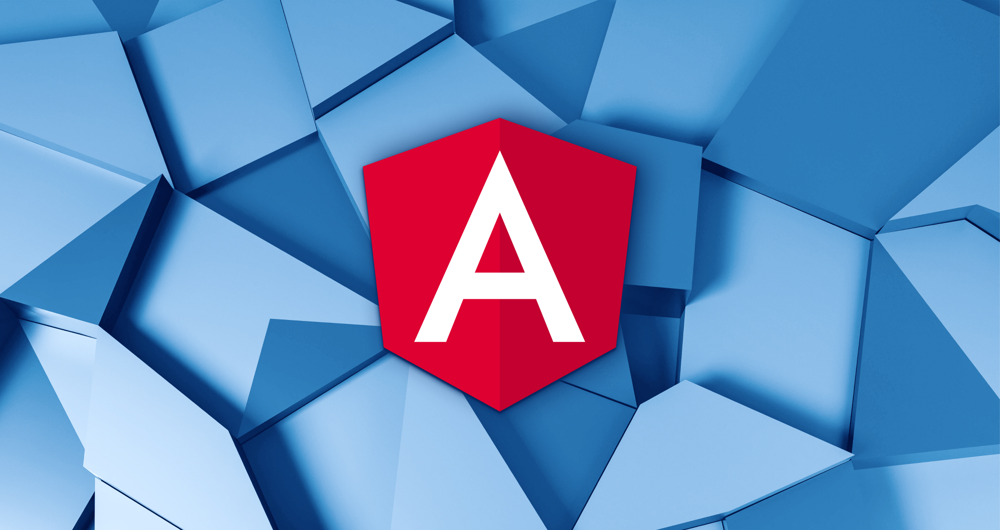

Что такое Angular
Angular - популярная платформа веб-разработки, разработанная и поддерживаемая Google. Angular использует TypeScript в качестве основного языка программирования. Редактор кода Visual Studio поддерживает TypeScript IntelliSense и навигацию по коду "из коробки", поэтому вы можете выполнять разработку Angular без установки какого-либо другого расширения. Ознакомиться с Visual Studio Code можете здесь
Устройство фреймворка Angular
Компоненты
Компоненты — это большие составные части приложения, не зависящие друг от друга. Например, один компонент — это лента новостей, другой — шапка сайта. Приложение строится из них, как из блоков. Обычно каждый компонент хранится в отдельном файле. Для него можно создать свои HTML-шаблон и CSS-стили. Они могут находиться в том же файле, что и компонент, а могут подключаться отдельно. Создается готовый блок интерфейса со структурой, стилями и определенной логикой поведения.
Модули
Это тоже составные части приложения, но другие. Они управляют компонентами. Если компонент — это область приложения, то модуль отвечает за управление ею. Точка входа в приложение, код для анимации или навигации — это всё модули.
Главный модуль есть в каждом проекте. Дополнительные добавляются по мере необходимости и выполняют конкретные задачи. Они нужны, чтобы не перегружать основной модуль лишней функциональностью и не делать его слишком громоздким.
Формы
Большинство приложений на Angular — form-based, то есть основанные на формах. Форма — это структура, в которую пользователь вводит какие-либо данные, а потом отправляет их на сервер. Блок для написания комментария или для обратной связи — это форма.
Angular делает работу с формами проще: их не приходится писать с нуля. Для них уже созданы шаблоны, которые нужно адаптировать под новую задачу.
Сервисы
Они похожи на компоненты, но более узкоспециализированные. Они могут определяться как на уровне модуля, так и на уровне компонента или приложения. В сервисах реализуется специальная логика. Они подключаются к приложению в качестве обычного класса и используются для хранения глобального состояния приложения. Также используются в качестве поставщика данных.
Директивы
Это составные части приложения, которые меняют структуру или поведение страницы. Компоненты тоже относятся к директивам. Но кроме них существуют еще два вида: структурные директивы и директивы, изменяющие внешний вид или поведение элементов. Они нужны, чтобы применить одно действие ко всем экземплярам одного компонента — например, изменение валюты во всех карточках товара.
Что необходимо для работы с Angular
Node.js
Это платформа для работы с JavaScript и TypeScript. Node.js нужна для установки и запуска Angular.
Npm
Это пакетный менеджер, который позволяет с помощью одной команды скачать нужный пакет данных. С его помощью обычно устанавливают фреймворки и библиотеки. Его пакеты также требуются для нормальной работы Angular. Обычно npm уже включен в Node.js.
TypeScript
Писать на Angular можно и на чистом JavaScript, и на других его вариациях. Но так как TypeScript является основным для фреймворка, должна быть возможность с ним работать.
Установка Angular
Для установки и использования интерфейса командной строки, а также для запуска сервера приложений Angular вам потребуется Node.js. Ознакомиться с Node.js можете здесь
Среда выполнения JavaScript и npm (the Node.js менеджер пакетов) установлены изначально, npm включен в Node.js который вы можете установить при загрузке Node.js. Чтобы проверить, что у вас есть Node.js и npm, правильно установленный на вашем компьютере, вы можете ввести node --version и npm --version.
Чтобы установить Angular CLI, введите в терминале или командной строке:
npm install -g @angular/cli
Установка может занять несколько минут. Теперь вы можете создать новое приложение Angular, введя:
ng new my-app
my-app это имя папки для вашего приложения. ng new - команда предложит вам указать параметры для созданного приложения. Примите значения по умолчанию, нажав клавишу Enter. Создание приложения Angular в TypeScript и установка его зависимостей может занять несколько минут.
Давайте быстро запустим наше приложение Angular, перейдя в новую папку и введя ng serve, чтобы запустить веб-сервер и открыть приложение в браузере:
cd my-app
ng serve
Вы должны увидеть "Добро пожаловать в приложение !!" на http://localhost:4200 в вашем браузере. Мы оставим веб-сервер запущенным, пока будем изучать приложение с помощью VS Code.
Чтобы открыть приложение Angular в VS Code, откройте другой терминал (или командную строку), перейдите к my-app папке и введите code .:
cd my-app
code .